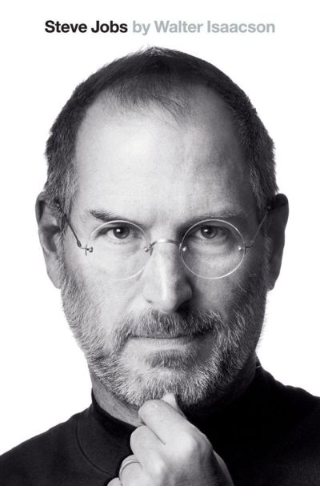

Ostatnie książki przeczytane przez Janka:
Janek
175 cm
18% przeczytane
czyli ok. 2400 stron
książki utworzyłyby wieżę
o wysokości 25 cm
-

Steve Jobs
Biografia • 2 cm grubości
Styczeń Opierając się na ponad czterdziestu rozmowach z Jobsem, przeprowadzonych w ciągu dwóch lat, a także na wywiadach z ponad setką osób: członkami rodziny, przyjaciółmi, przeciwnikami, konkurentami i kolegami Jobsa, Walter Isaacson spisał wciągającą opowieść o pełnym wzlotów i upadków życiu oraz płomiennej osobowości twórczego przedsiębiorcy, którego wykraczająca poza wszelkie schematy pasja i perfekcjonizm zrewolucjonizowały sześć branż: komputery osobiste, filmy animowane, muzykę, telefony, tablety i publikacje cyfrowe.
Ostatnie książki przeczytane przez Agnieszkę:
Agnieszka
175 cm
18% przeczytane
czyli ok. 2400 stron
książki utworzyłyby wieżę
o wysokości 25 cm
-
Steve Jobs
Biografia • 2 cm grubości
Styczeń Opierając się na ponad czterdziestu rozmowach z Jobsem, przeprowadzonych w ciągu dwóch lat, a także na wywiadach z ponad setką osób: członkami rodziny, przyjaciółmi, przeciwnikami, konkurentami i kolegami Jobsa, Walter Isaacson spisał wciągającą opowieść o pełnym wzlotów i upadków życiu oraz płomiennej osobowości twórczego przedsiębiorcy, którego wykraczająca poza wszelkie schematy pasja i perfekcjonizm zrewolucjonizowały sześć branż: komputery osobiste, filmy animowane, muzykę, telefony, tablety i publikacje cyfrowe.
-

Good Coffee Beverage
2 cm
Luty 2012
Coffee is a brewed beverage with a dark, slightly acidic flavor prepared from the roasted seeds of the coffee plant, colloquially called coffee beans.
-

Full Throttle Game
2 cm
Luty 2012
Nie
Full Throttle is a computer adventure game developed and published by LucasArts. It was designed by Tim Schafer, who would later go on to design the critically acclaimed titles Grim Fandango, Psychonauts and Brütal Legend.
A co ze mną?!
Jeśli masz cm wzrostu, musisz czytać każdego dnia ok. stron, co daje ok. książek w ciągu roku.